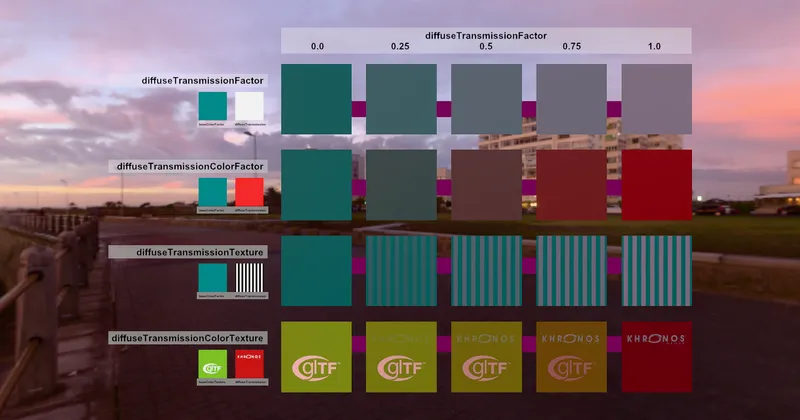

GLTF > GLTF Extensions > KHR_materials_diffuseTransmission
Diffuse Transmission Test - RedGPU WebGPU Example
Tests Diffuse Transmission effects on translucent objects.
반투명한 물체의 확산 투과(Diffuse Transmission) 효과를 테스트합니다.

GLTF > GLTF Extensions > KHR_materials_diffuseTransmission
Tests Diffuse Transmission effects on translucent objects.
반투명한 물체의 확산 투과(Diffuse Transmission) 효과를 테스트합니다.
